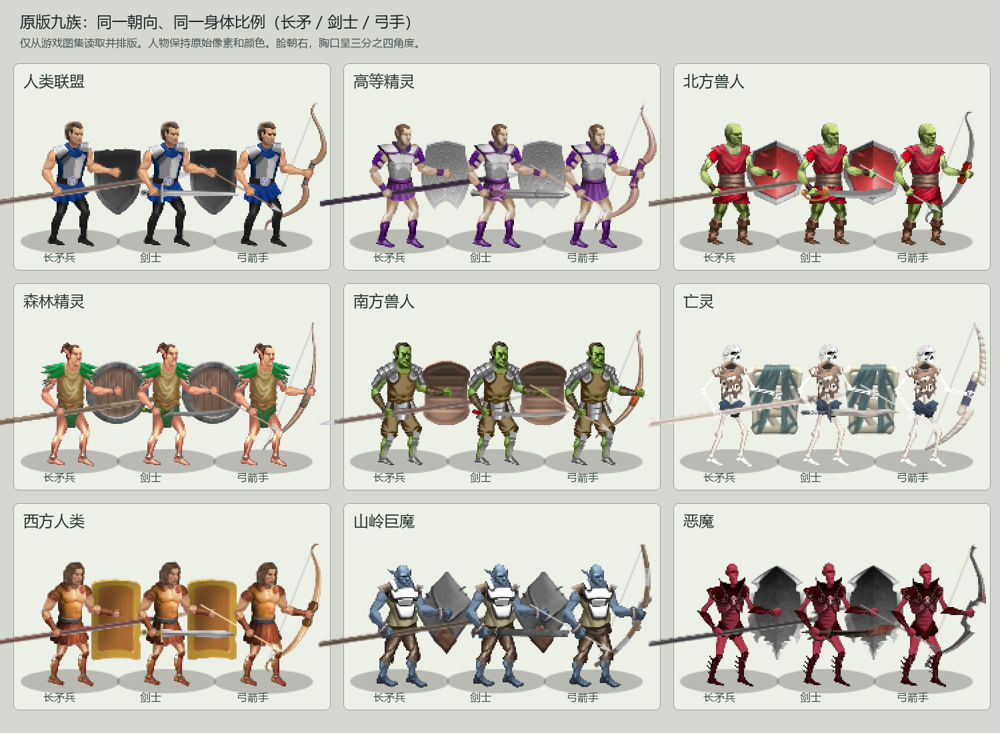
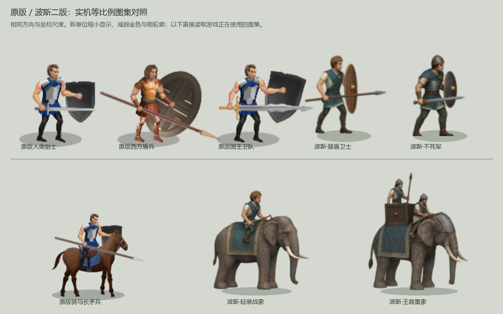

步兵护阵，战象破阵
通用兵沿用原有规则与动作。两名专属步兵，两种战象替代双马。下方出兵不消耗黄金，便于观察；正式游戏仍使用商店和蓄力。
正在加载素材…
点击兵种立即出兵。重置后第4、6路有对照部队。长矛兵、剑士、弓箭手与藤盾卫士已更新外观和位置校准；其他单位保持上一版。
查看原版九族参考板与二版对照


通用兵沿用原有规则与动作。两名专属步兵，两种战象替代双马。下方出兵不消耗黄金，便于观察；正式游戏仍使用商店和蓄力。
点击兵种立即出兵。重置后第4、6路有对照部队。长矛兵、剑士、弓箭手与藤盾卫士已更新外观和位置校准；其他单位保持上一版。

